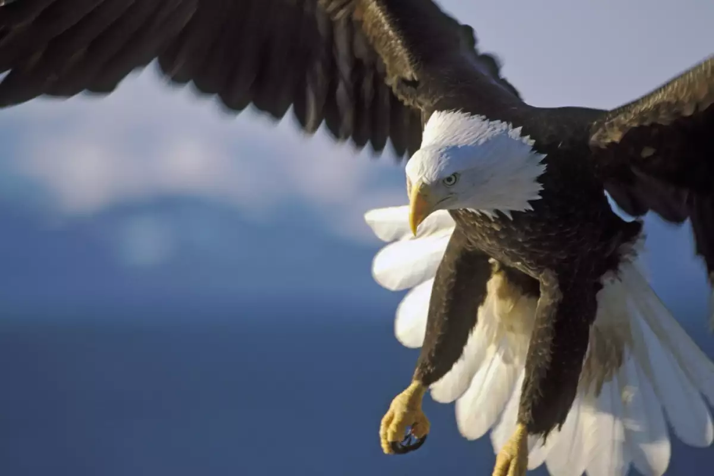
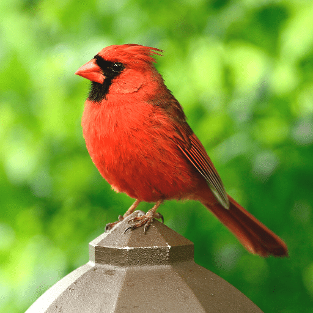
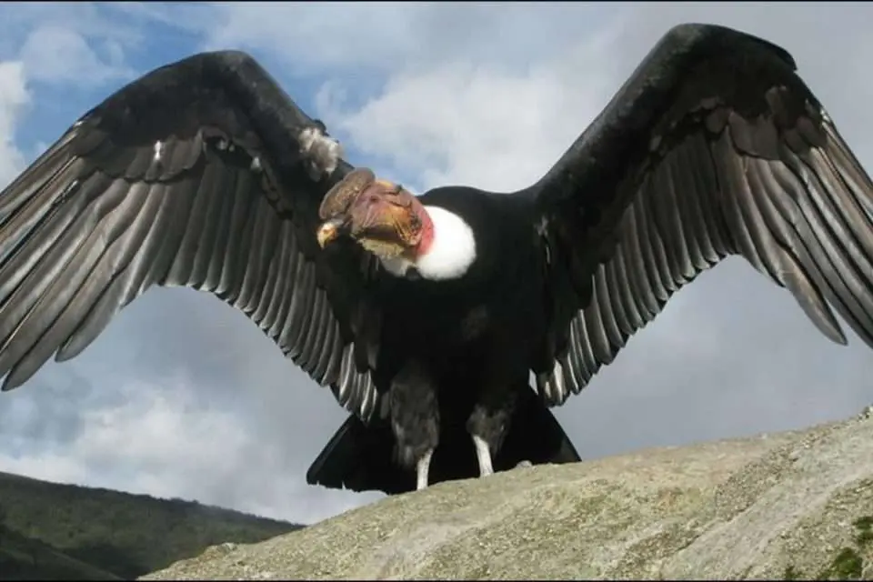
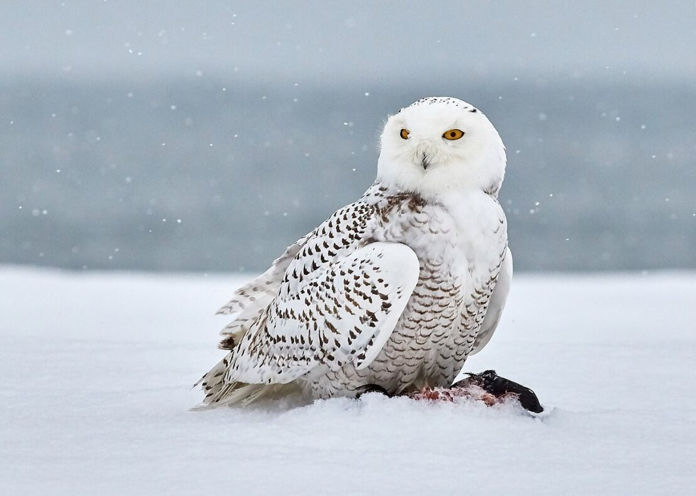
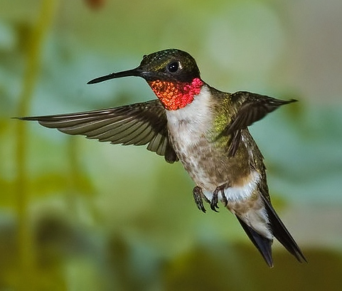

Северна Америка
|  | Белоглав Орел | |
| Белоглавият орел е сравнително голяма птица, с дължина на тялото от 71 до 106 cm, размах на крилете 168 – 244 cm и маса от 3 до 7 kg. Живее около 30 години. Гнездото, в което се излюпват малките, е с размери 4 на 2,5 m и тежи един тон. През 1973 година е класифициран като застрашен от изчезване вид в САЩ, но благодарение на положените грижи, на 28 юни 2007 година е премахнат от списъка на застрашените видове. | ||
{kind=link}
| Северен Кардинал |  | |
| Северният кардинал е вид птица от семейство кардиналови, която е известна със своята ярка червена окраска (при мъжките) и мелодичен песенен глас. Често се срещат близо до човешки обитания и могат да бъдат привлечени от хранилки. Хранят се с плодове, семена и насекоми. Северният кардинал е официалната птица на няколко щата в САЩ, включително Илинойс, Индиана, Кентъки и Вирджиния. | ||
{kind=link}
|  | Калифорнийски кондор | |
| Калифорнийският кондор е най-голямата птица в Северна Америка и една от най-големите птици изобщо. Фосилната летопис на вида сочи, че преди около 50 000 години, калифорнийският кондор се е срещал из обширни територии на цяла Северна Америка. Като вид е възникнал преди около 200 000 години. | ||
{kind=link}
| Снежна сова |  | |
| С жълтите си очи, черен клюн и бяло оперение снежната сова е лесно разпознаваема. Дълга е 52 – 71 cm с размах на крилете от 125 – 150 cm. Може да тежи от 1,6 до 3 kg.[3] Полярната сова е един от най-големите видове в рода и в Северна Америка е средно най-тежкият вид сова.Този вид сови гнездят на земята, като си построяват гнездо върху могили и големи скални блокове. Избират места с добра видимост, непосредствен достъп до ловни територии и без сняг, могат да използват наноси от чакъл и изоставени орлови гнезда. | ||
{kind=link}
|  | Рубиненогушо колибри | |
| Рубиненогушите колибрита са вид дребни птици от семейство Колиброви. Разпространени са в големи части от Северна и Централна Америка и са единственият вид колибри, срещащ се редовно на изток от река Мисисипи. Достига 7 до 9 cm дължина, 8 – 11 cm размах на крилете и маса 8 до 11 g. Наименованието на вида се дължи на характерното яркочервено оцветяване на гърлото при мъжките. | ||
{kind=link}